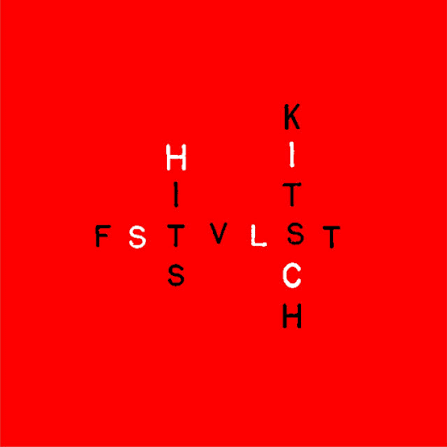
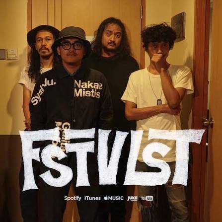

FSTVLST adalah anomali dalam kancah musik indie Indonesia yang meramu energi rock mentah dengan kedalaman sastra. Di bawah naungan vokal Farid Stevy, unit asal Yogyakarta ini memadukan distorsi gitar yang jujur dengan lirik-lirik puitis tentang kegelisahan dan perenungan hidup. Musik mereka melampaui sekadar hiburan telinga, menjelma menjadi lembaran surat terbuka yang menggugah sekaligus menenangkan.
Sejak debutnya, FSTVLST telah menorehkan jejak yang signifikan di panggung musik Indonesia. Dengan setiap album dan pertunjukan live, mereka menegaskan diri sebagai suara generasi muda yang haus akan ekspresi autentik. FSTVLST bukan sekadar band; mereka adalah cermin dari keresahan dan harapan yang membara di hati pendengarnya.
500K
Spotify Followers
300K
Monthly Listeners
3
Official Full Albums